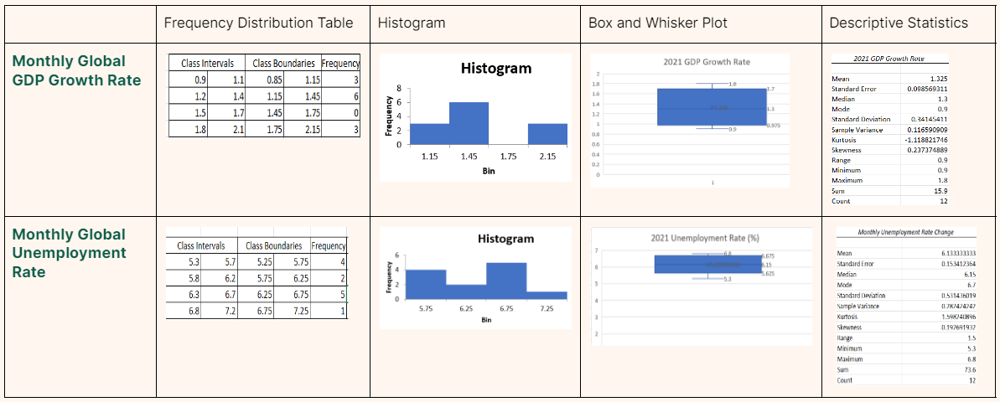

2021
Quantitative Variables

The mean for the 2021 Monthly Global GDP Growth Rate is 1.325, and the mode is 0.9. Based on the Box and Whisker Plot, the 1st Quartile is 0.975, the median 1.3, and the 3rd Quartile is 1.7. It is slightly positively skewed or skewed to the right. The standard deviation is 0.34145411, and there are no outliers.
We can infer that the average GDP Growth Rate in 2021 is 1.325. This is because the mean is the best to consider as the average since there are no outliers. This year’s standard deviation being way lower than the previous tells us that there’s been much less changes in the GDP Growth Rate throughout 2021 compared to 2020.
The mean for the 2021 Monthly Global Unemployment Rate is 6.133, and the mode is 6.7. Based on the Box and Whisker Plot, the 1st Quartile is 5.625, the median is also 6.15, and the 3rd Quartile is 6.675. It is slightly negatively skewed or skewed to the left. The standard deviation is 0.531436019, and there are no outliers.
We can infer that the average Unemployment Rate in 2021 is 6.133. This is because the mean is the best to consider as the average since there are no outliers. This year’s standard deviation being lower than the previous tells us that there’s been less changes in the Unemployment Rate throughout 2021 compared to 2020.